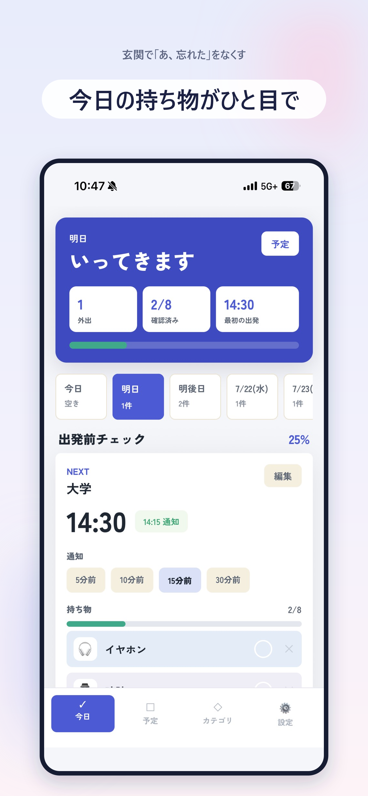
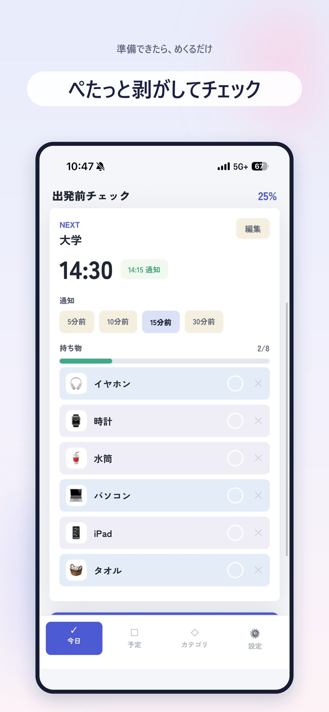
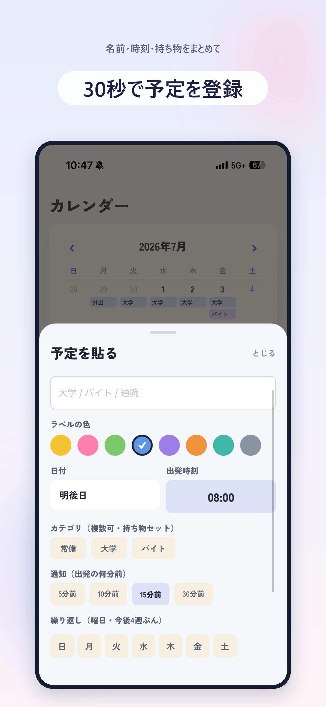

出発前のお知らせ
指定した時間に通知。イヤホン中はSiriが持ち物を読み上げます。
玄関で気づく、をなくす。
持ち物と出発時刻を入れておけば、出発前に通知。準備できたものを付箋のようにめくり、「全部そろった」を確かめてから出発できます。
App Storeで入手 ↗
Features
指定した時間に通知。イヤホン中はSiriが持ち物を読み上げます。
用意できた持ち物を付箋のようにチェックし、残りを確認できます。
「明日8時、傘と水筒」のような声や文章を予定へ仕分けます。
How to use
日付、出発時刻、持ち物を声や文字でまとめて登録。
設定したタイミングで、準備を始めるきっかけが届きます。
全部チェックできたら、安心して「いってきます」。
Screens



App Storeからダウンロードできます。
App Storeで入手 ↗